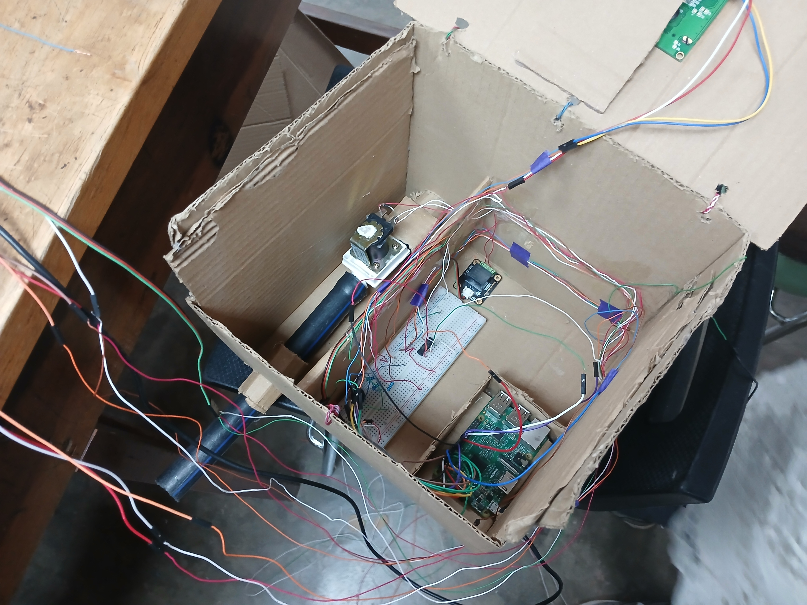
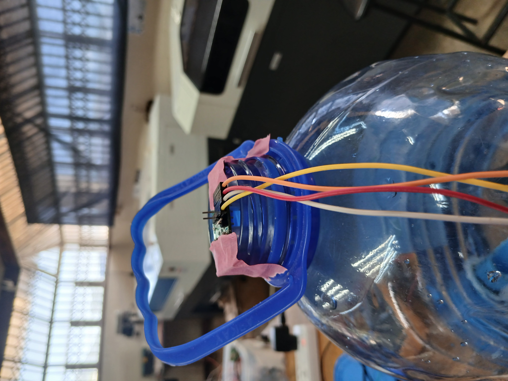
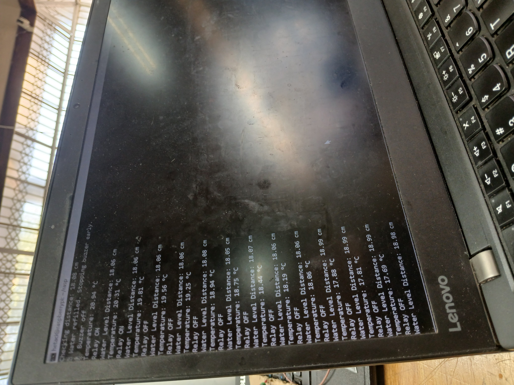

Projects
Project 1: Automated Evaporative Cooling System
Description: Designed and developed a smart monitoring system using the Raspberry Pi. The system integrates a temperature sensor, ultrasonic sensor, relay, and buzzer to automate control and alert mechanisms in an embedded environment. The main objectives are to monitor ambient temperature, trigger a relay when a threshold is surpassed, and assess the water level in a reservoir using an ultrasonic sensor. When the water level drops below a predefined value, a buzzer is activated to alert users. This embedded solution has practical implications in home automation, agriculture, and water management systems.



Project 2: Smart Bin System
Description: Developed a smart bin system to sort waste based on moisture content in the waste. An arduino Uno 3 was used as the microcontroller. Moisture sensor was utilised to detect the moisture in the watse and automatically direct the waste into sepearte compartmens. An ultrasonic sensor was also utilised to help with an automatic opening of the bin lid when an object is closely within a certain range of distance. The aim of this project was to help improve recycling rates. This was also to help with lessening the risk of bacteria contamination, by helping a person to not touch the bin lid that could be infected.

Contacts
Email: tkmphande8@gmail.com
Adress: Nkolokosa, Blantyre
Phone: +265 888 328 4677